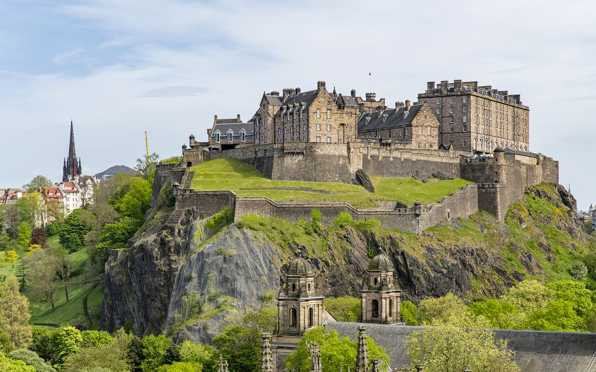
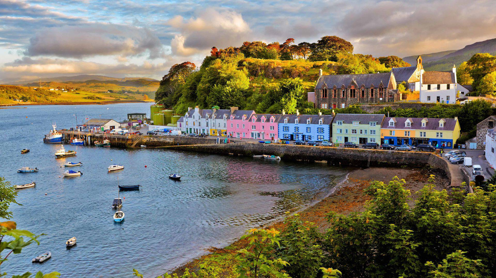

Scotland - Mist and Majesty
Highlands, castles, and winds that tell stories of knights and poets.

Edinburgh Castle
A fortress perched above the city, steeped in history and legend.

Isle of Skye
Misty landscapes and rugged coastlines that stir the heart of a wanderer.
Cultural Spotlight
Scotland is a land of misty highlands, clans, and legends. Bagpipes echo through glens, castles tell stories of bravery, and folklore of faeries and giants infuses the landscapes with imagination. The culture is rich, poetic, and timeless.
Practical Tips
- Best time to visit: May–September for mild weather and long daylight.
- Must-pack items: waterproof layers, hiking boots, and a warm scarf.
- Experiences to dream of: exploring highlands, castles, and scenic coastlines.
- Immersion: Learn about local myths and traditions to fully feel the Scottish spirit.